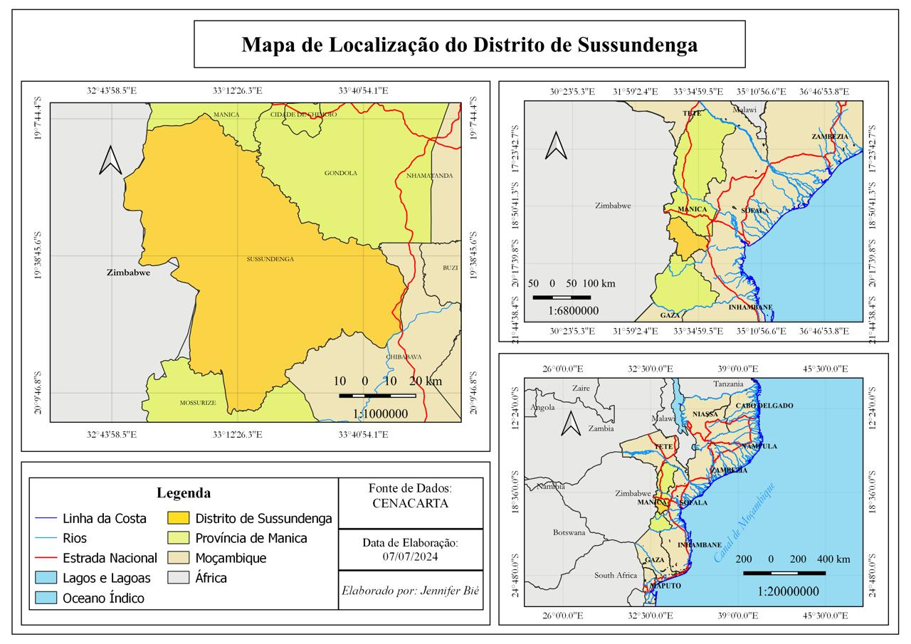
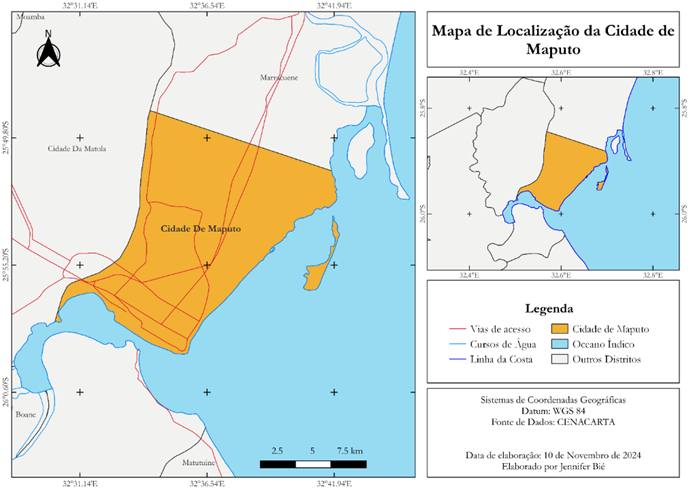

Sobre mim
Olá! Sou Jennifer Bié, apaixonada por geotecnologias e desenvolvimento de soluções que ajudam a transformar espaços e comunidades. Atualmente finalista em Ciências de Informação Geográfica, fundadora do MeuSpot e entusiasta de projetos que unem inovação e impacto social.
Ferramentas e Tecnologias
Minhas Habilidades
- Mapeamento geoespacial
- Análise de SIG (Sistemas de Informação Geográfica)
- Processamento de dados geográficos
- Desenvolvimento de aplicações GIS
- Coleta de dados com KoboCollect e GPS Logger
- Programação em Python para análise geoespacial
- Visualização de dados e elaboração de relatórios
Meus Projectos

Projeto Imagem 1
Mapeamento de zonas urbanas em expansão com análise espacial.

Projeto Imagem 2
Análise multicritério para seleção de locais para construção.
Projeto Imagem 3
Identificação de áreas de risco para incêndios florestais.

Projeto Imagem 4
Mapeamento da cobertura do solo e uso sustentável da terra.